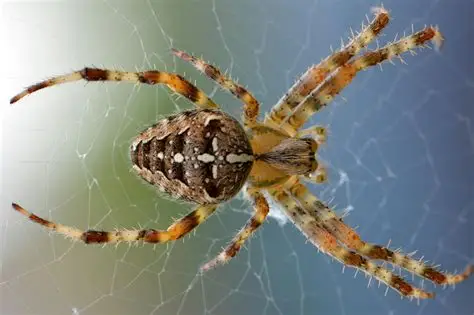

Australia alberga más de 2,000 especies de arañas, muchas endémicas, incluyendo algunas de las más grandes y peligrosas del mundo.
Australia ha estado
aislada de otros continentes durante millones de años,
lo que permitió que su fauna, incluidas las arañas,
evolucionara de manera única sin competencia
directa de otras especies o depredadores externos
¡Totalmente! La fama de Australia y sus arañas gigantes es legendaria. Por su aislamiento geográfico, el país desarrolló una fauna única con más de 10,000 especies de arañas.